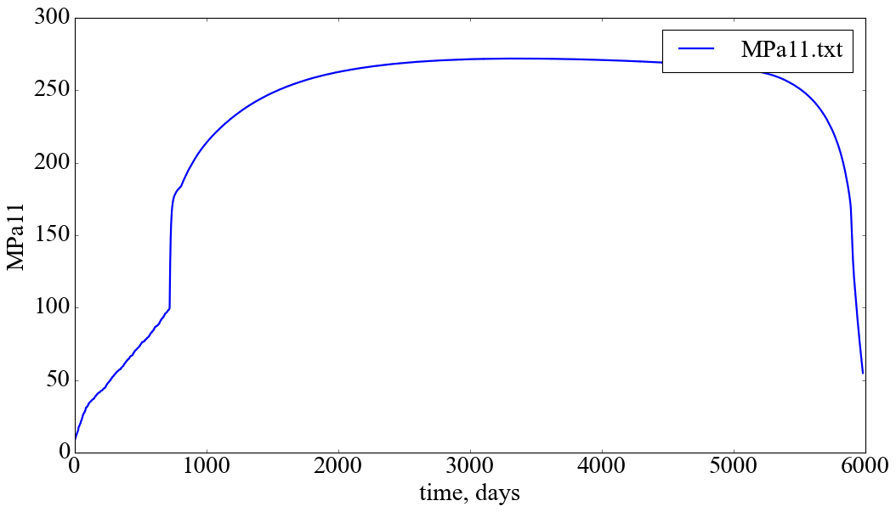
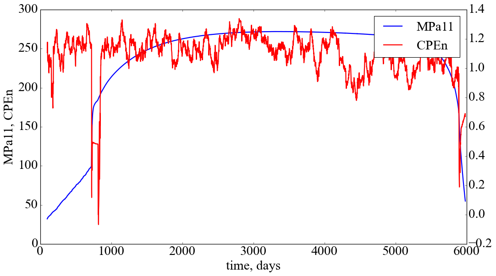
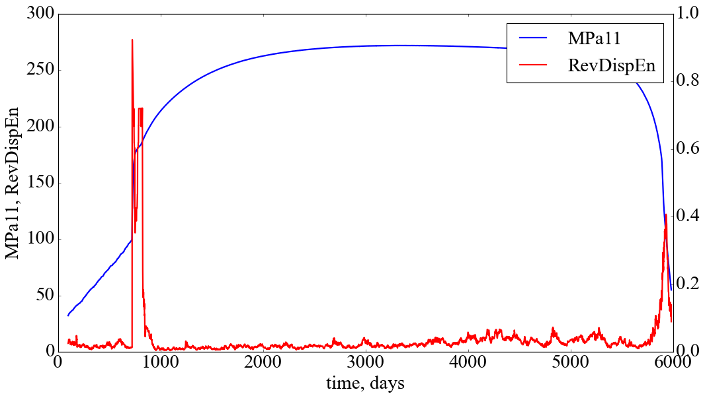

import EntropyHub as eh
import numpy as np
from sklearn import preprocessing
import matplotlib.pyplot as plt
import pandas as pd
import yfinance as yf
#import antropy as ant
import neurokit2
import warnings
warnings.filterwarnings('ignore')6 Лабораторна робота № 5
Тема. Ентропійний аналіз складних систем.
Мета. Навчитись розраховувати значення різних типів ентропії часового ряду та досліджувати динаміку зміни її значень для оцінки якості прогнозів часових рядів.
6.1 Теоретичні відомості
Питання динаміки розвитку і функціонування складних систем може розглядатись у двох варіантах:
- як дослідження шумової активності;
- як детерміністичного випадку з певним ступенем порядку.
Останніми роками було використано кілька підходів для ідентифікації механізмів, що лежать в основі розвитку та функціонування складних систем. Особливо корисні результати було отримано при їх дослідженні методами теорії випадкових матриць, моно- та мультифрактального аналізу, теорії хаосу з реконструкцією траєкторії системи у фазовому просторі та визначення її параметрів, рекурентного аналузу. Ми розглянули ці методи у попередніх роботах. Однак, застосування деяких із методів висуває вимоги до стаціонарності досліджуваних даних, потребує довгих часових рядів та комплексного обчислення кількох параметрів.
Іншим підходом до розгляду питання вивчення особливостей складних систем є обчислення характеристик ентропії. Для практичного застосування у якості міри невизначеності, а значить і складності сигналу, використовують десятки різновидів ентропії.
Концепція термодинамічної ентропії як міри хаосу системи добре відома у фізиці, однак, останніми роками поняття ентропії було застосоване до складних систем інших об’єктів (біологічних, економічних, соціальних тощо). Так, один із найбільш часто використовуваних методів визначення ентропії базується на обчисленні спектру потужності Фур’є та застосовується для вивчення сигналів (часових рядів) різної природи. Проте, використання дискретного перетворення Фур’є для аналізу часових рядів має свої недоліки, зокрема, на результати впливає нестаціонарність рядів, варіювання їх довжини від сотень до сотень тисяч, та обмеження самого методу (незмінність частотно-часових характеристик протягом всього часу функціонування системи). Тому виникає питання про розрахунок значень ентропії за допомогою інших методів.
Введемо поняття ентропії, скориставшись інформацією, яку можна знайти у Вікіпедії.
Термодинамічна ентропія \(S\), часто просто іменована ентропія, в хімії і термодинаміці є мірою кількості енергії у фізичній системі, яка не може бути використана для виконання роботи. Вона також є мірою безладдя, присутнього в системі.
Поняття ентропії була вперше введено у 1865 році Рудольфом Клаузіусом. Він визначив зміну ентропії термодинамічної системи при оборотному процесі як відношення зміни загальної кількості тепла \(\Delta Q\) до величини абсолютної температури \(T\):
\[ \Delta S = \Delta Q / T. \]
Рудольф Клаузіус дав величині \(S\) ім’я “ентропія”, що походить від грецького слова τρoπή, “зміна” (зміна, перетворення). Зверніть увагу на те, що рівність відноситься до зміни ентропії.
У 1877 році, Людвіг Больцман зрозумів, що ентропія системи може відноситися до кількості можливих “мікростанів” (мікроскопічних станів) що узгоджуються з їх термодинамічними властивостями. Розглянемо, наприклад, ідеальний газ у посудині. Мікростан визначений як позиції і імпульси кожного атома, що становить систему. Зв’язність пред’являє до нас вимоги розглядати тільки ті мікростани, для яких: (i) місцерозташування всіх частин розташовані в рамках судини, (ii) для отримання загальної енергії газу кінетичні енергії атомів підсумовуються. Больцман постулював що
\[ S = k_{B}\ln{\Omega}, \]
де константу \(k_{B} = 1,38 \cdot 10^{-23} Дж/К\) ми знаємо тепер як сталу Больцмана, a \(\Omega\) є числом мікростанів, які можливі в наявному макроскопічному стані. Цей постулат, відомий як принцип Больцмана, може бути оцінений як початок статистичної механіки, яка описує термодинамічні системи використовуючи статистичну поведінку компонентів, із яких вони складаються. Принцип Больцмана зв’язує мікроскопічні властивості системи (\(\Omega\)) з однією з її термодинамічних властивостей (\(S\)).
Згідно визначенню Больцмана, ентропія є просто функцією стану. Більш того, оскільки (\(\Omega\)) може бути тільки натуральним числом (1, 2, 3), ентропія повинна бути додатною — виходячи з властивостей логарифма.
У випадку дискретних станів квантової механіки кількість станів підраховується звичайним чином. В рамках класичної механіки мікроскопічний стан системи описується координатами \(q_{i}\) й імпульсами \(p_{i}\) окремих частинок, які пробігають неперервні значення. Для підрахунку станів у класичних системах фазовий простір розбивають на невеликі комірки із об’ємом, який відповідає сталій Планка. У такому випадку
\[ S = k_{B}\ln\frac{1}{( 2\pi\hbar )^{s}} \int \prod_{i=1}^{s} dq_{i}dp_{i}, \]
де \(s\) — число незалежних координат, \(\hbar\) — приведена стала Планка, а інтегрування проводиться по області фазового простору, який відповідає певному макроскопічному стану.
Клод Шеннон (Shannon, 1948) запропонував формулу для оцінки невизначеності кодової інформації в каналах зв’язку, звану ентропією Шеннона:
\[ S = -k\sum_{i=1}^{n}p_{i}\ln{p_{i}}, \]
де \(p_{i}\) — вірогідність того, що символ \(i\) зустрічається в коді, який містить \(N\) символів, \(k\) — розмірний множник.
Зв’язок між ентропією і інформацією можна прослідкувати на наступному прикладі. Розглянемо тіло при абсолютному нулі температури, і хай ми маємо повну інформацію про координати і імпульси кожної частинки. Для простоти покладемо, що імпульси всіх частинок рівні нулю. В цьому випадку термодинамічна ймовірність рівна одиниці, а ентропія — нулю. При кінцевих температурах ентропія в рівновазі досягає максимуму. Можна зміряти всі макропараметри, що характеризують даний макростан. Проте ми практично нічого не знаємо про мікростан системи. Точніше кажучи, ми знаємо, що даний макростан можна реалізувати за допомогою дуже великого числа мікростанів. Таким чином, нульовій ентропії відповідає повна інформація (ступінь незнання рівний нулю), а максимальної ентропії — повне незнання мікростанів (ступінь незнання максимальний).
У теорії інформації ентропія (інформаційна ентропія) визначається як кількість інформації. Нехай \(P\) — апріорна вірогідність деякої події (ймовірність до проведення досвіду), а \(P_{1}\) – ймовірність цієї події після проведення досвіду. Для простоти вважатимемо, що \(P_{1} = 1\). За Шенноном, кількість інформації \(I\), яка дає точну відповідь (після проведення експерименту)
\[ I = K \log{P}. \]
Ця кількість інформації, за визначенням, дорівнює одному біту.
Фізичний сенс \(I\) — це міра нашого незнання. Іншими словами, \(I\) — це та інформація, яку ми можемо одержати, вирішивши завдання. У прикладі (тіло при абсолютному нулі температури), що розглядається вище, міра нашого незнання рівна нулю, оскільки \(P = 1\). Після проведення досвіду ми одержуємо нульову інформацію \(I = 0\), оскільки все було відомо до досвіду. Якщо розглядати тіло при кінцевих температурах, то до проведення досвіду число мікростанів, а отже, і \(P\) дуже велике. Після проведення досвіду ми одержуємо велику інформацію, оскільки нам стають відомими координати і імпульси всіх частинок.
Аналогія між кількістю інформації і ентропією \(S\), визначуваною з принципу Больцмана, очевидна. Досить покласти множник \(K\) рівним постійній Больцмана \(k_{B}\) і використовувати натуральний логарифм. Саме з цієї причини величину $ I $ називають інформаційною ентропією. Інформаційна ентропія (кількість інформації) була визначена по аналогії із звичайною ентропією, і вона має властивості, характерні для звичайній ентропії: адитивність, екстремальні властивості і т.д. Проте ототожнювати звичайну ентропію з інформаційною не можна, оскільки неясно, яке відношення має друге начало до інформації. Нагадаємо, що екстенсивна величина — ця така характеристика системи, яка росте із збільшенням розмірів системи, тобто, якщо наша система складається з двох незалежних підсистем \(А\) і \(В\), то ентропію всієї системи можна одержати складанням ентропій підсистем:
\[ S(\,A+B)\, = S(\,A)\, + S(\,B)\,. \]
Саме ця властивість і означає екстенсивність, або адитивність, ентропії.
6.2 Хід роботи
plt.style.use('classic')
params = {
'axes.labelsize': 26,
'axes.titlesize':26,
"axes.grid" : False,
'font.size': 26,
'legend.fontsize': 26,
'xtick.labelsize': 26,
'ytick.labelsize': 26,
'lines.linewidth': 2,
'axes.facecolor': 'white',
'figure.facecolor': 'white',
'axes.titlesize': 'small',
'font.family': 'Times New Roman',
'savefig.dpi': 300
}
plt.rcParams.update(params)
xlabel = 'time, days'symbol = "BTC-USD"
symbol_for_graph = "BTC-USD"
start = "2019-01-01"
end = "2022-09-28"
symbol_plot = symbol.split('.')[0]
symbol_for_graph_plot = symbol_for_graph.split('.')[0]
data = yf.download(symbol, start, end)
close = data['Adj Close'].copy()
for_graph = data['Adj Close'].copy()
np.savetxt(f'{symbol}_initial_time_series.txt', close.values)[*********************100%***********************] 1 of 1 completed6.2.1 Виведення графіку досліджуваного ряду
fig, ax = plt.subplots()
close.plot(figsize=(15,8), xlabel=xlabel, ylabel=symbol_plot)
ax.legend([symbol_plot]);
plt.savefig(f'{symbol}.jpg')
plt.show()
fig, ax = plt.subplots()
for_graph.plot(figsize=(15,8), xlabel=xlabel, ylabel=symbol_for_graph_plot)
ax.legend([symbol_for_graph]);
plt.savefig(f'{symbol_for_graph_plot}.jpg')
plt.show()
6.2.2 Задання ширини вікна та кроку
window = 100 # розмір вікна
tstep = 1 # крок вікна 6.2.3 Approximate entropy (Апроксимаційна ентропія)
- Steven M. Pincus, Approximate entropy as a measure of system complexity, Proceedings of the National Academy of Sciences, 88.6 (1991): 2297-2301.
Теоретичний опис методики розрахунку
Ентропія подібності (Approximate Entropy, ApEn) є “статистикою регулярності”, що визначає можливість передбачувати флуктуації в часових рядах. Інтуїтивно вона означає, що наявність повторюваних шаблонів (послідовностей певної довжини, побудованих із чисел ряду, що слідують одне за іншим) флуктуацій у часовому ряді призводить до більшої передбачуваності часового ряду порівняно із рядами, де повторюваності шаблонів немає. Порівняно велике значення ApEn показує ймовірність того, що подібні між собою шаблони спостережень не будуть слідувати один за одним. Іншими словами, часовий ряд, що містить велику кількість повторюваних шаблонів, має порівняно мале значення ApEn, а значення ApEn для менш передбачуваного (більш складного) процесу є більшим.
При розрахунку ApEn для даного часового ряду \(S_{N}\), що складається із \(N\) значень \(t(\,1)\,, t(\,2)\,, t(\,3)\,, ... , t(\,N)\,\) вибираються два параметри, \(m\) та \(r\). Перший з цих параметрів, \(m\), вказує довжину шаблона, а другий — \(r\) — визначає критерій подібності. Досліджуються підпослідовності елементів часового ряду \(S_{N}\), що складаються з \(m\) чисел, взятих, починаючи з номера \(i\), і називаються векторами \(p_{m} (\,i)\,\). Два вектори (шаблони), \(p_{m}(\,i)\,\) та $ p_{m}(,j),$, будуть подібними, якщо всі різниці пар їх відповідних координат є меншими за значення \(r\), тобто якщо
\[ | t(\,i+k)\, - t(\,j+k)\, | < r \quad \textrm{для} \quad 0 \leq k < m. \]
Для розглядуваної множини \(P_{m}\) всіх векторів довжини \(m\) часового ряду \(S_{N}\) можна обраховуються значення
\[ C_{im}(\,r)\, = \frac{n_{im}(\,r)\,}{N-m+1}, \]
де \(n_{im}(\,r)\,\) — кількість векторів у \(P_{m}\), що подібні вектору \(p_{m}(\,i)\,\) (враховуючи вибраний критерій подібності \(r\)). Значення \(C_{im}(\,r)\,\) є часткою векторів довжини \(m\), що мають схожість із вектором такої ж довжини, елементи якого починаються з номера \(i\). Для даного часового ряду обраховуються значення \(C_{im}(\,r)\,\) для кожного вектора у \(P_{m}\), після чого знаходиться середнє значення \(C_{m}(\,r)\,\), яке виражає розповсюдженість подібних векторів довжини \(m\) у ряду \(S_{N}\). Безпосередньо ентропія подібності для часового ряду \(S_{N}\) з використанням векторів довжини \(m\) та критерію подібності \(r\) визначається за формулою:
\[ ApEn(\,S_{N}, m, r)\, = \ln(\,\frac{C_{m}(\,r)\,}{C_{m+1}(\,r)\,})\,, \]
тобто, як натуральний логарифм відношення повторюваності векторів довжиною \(m\) до повторюваності векторів довжиною \(m+1\).
Таким чином, якщо знайдуться подібні вектори у часовому ряді, ApEn оцінить логарифмічну ймовірність того, що наступні інтервали після кожного із векторів будуть відрізнятись. Менші значення ApEn відповідають більшій ймовірності того, що за векторами слідують подібні їм. Якщо часовий ряд дуже нерегулярний — наявність подібних векторів не може бути передбачуваною і значення ApEn є порівняно великим.
Зауважимо, що ApEn є нестійкою до вхідних даних характеристикою, оскільки досить сильно залежить від параметрів \(m\) та \(r\).
m = 3 #розмірність вкладень
tau = 1 #часова затримка
r = 0.45 #параметр подібності
ret_type = 4 #вид ряду: 1-вихідний, 2-абсолютні приб. 3-відносні приб. 4-нормалізовані приб.
n = close.shape[0] #задаємо кількість значень
ApEn = [] #масив для зберігання значень ентропіїfor i in range(0,n-window,tstep):
fragm = close.iloc[i:i+window] #відбираємо фрагмент та в подальшому відбираємо потрібний тип ряду:
# 1 - вихідний ряд, 2 - детрендований, 3 - прибутковості, 4 - стандартизовані прибутковості, 5 - логарифмічні
if ret_type == 1:
pass
elif ret_type == 2:
fragm = fragm[1:] - fragm[:-1]
elif ret_type == 3:
fragm = fragm.pct_change()
elif ret_type == 4:
fragm = fragm.pct_change()
fragm -= fragm.mean()
fragm /= fragm.std()
elif ret_type == 5:
fragm = np.log(fragm) - np.log(fragm.shift(1))
fragm -= fragm.mean()
fragm /= fragm.std()
fragm = fragm.dropna().values
Ap, _ = eh.ApEn(Sig = fragm, m = m, tau = tau, r = r)
ApEn.append(Ap[-1])name_for_save = f"ApEn_{symbol}_{window}_{tstep}_{m}_{tau}_{r}_{ret_type}.txt" #ім'я файлу для зберігання
with open(name_for_save, 'w') as f: #відкриваємо на запис
ApEn_file = [str(line) + '\n' for line in ApEn]
f.writelines(ApEn_file)fig, ax = plt.subplots(figsize=(15,8)) # візуалізуємо результати розрахунку
ax.plot(close.index[window:n:tstep], for_graph.values[window:n:tstep], label=f'{symbol_for_graph_plot}', color='b')
ax.set_xlabel("time, days")
ax.set_ylabel(f"{symbol_for_graph_plot}, ApEn")
ax2 = ax.twinx()
ax2.plot(close.index[window:n:tstep], ApEn, label='ApEn', color='r')
fig.legend(loc="upper right", bbox_to_anchor=(1,1), bbox_transform=ax.transAxes)
plt.savefig(f"ApEn, symbol={symbol}, window size={window}, time step={tstep}, returns_type={ret_type}, embedding dimension={m}, delay={tau}, r={r}.jpg")
plt.show()
6.2.4 Fuzzy entropy (Нечітка ентропія)
- Weiting Chen, et al. Characterization of surface EMG signal based on fuzzy entropy, IEEE Transactions on neural systems and rehabilitation engineering, 15.2 (2007): 266-272.
- Hong-Bo Xie, Wei-Xing He, and Hui Liu, Measuring time series regularity using nonlinear similarity-based sample entropy, Physics Letters A, 372.48 (2008): 7140-7146.
m = 3 #розмірність вкладень
tau = 1 #часова затримка
characteristic_func = "default" #вид функції приналежності: default, sigmoid, gudermannian, linear
r = (0.4, 2.0) #параметри, що подаються до функції приналежності. для default та sigmoid 2 значення r,
#для gudermannian та linear 1 значення r
ret_type = 4 #вид ряду: 1-вихідний, 2-абсолютні приб. 3-відносні приб. 4-нормалізовані приб.
n = close.shape[0] #задаємо кількість значень
FuzzEn = [] #масив для зберігання значень ентропіїfor i in range(0,n-window,tstep):
fragm = close.iloc[i:i+window] #відбираємо фрагмент та в подальшому відбираємо потрібний тип ряду
if ret_type == 1:
pass
elif ret_type == 2:
fragm = fragm[1:] - fragm[:-1]
elif ret_type == 3:
fragm = fragm.pct_change()
elif ret_type == 4:
fragm = fragm.pct_change()
fragm -= fragm.mean()
fragm /= fragm.std()
elif ret_type == 5:
fragm = np.log(fragm) - np.log(fragm.shift(1))
fragm -= fragm.mean()
fragm /= fragm.std()
fragm = fragm.dropna().values
Fuzz, _, _ = eh.FuzzEn(Sig = fragm, m = m, tau = tau, Fx = characteristic_func, r = r) #Рахуємо нечітку ентропію
FuzzEn.append(Fuzz[-1]) #дожаємо розрахованє значення до масиву значень name_for_save = f"FuzzEn_{symbol}_{window}_{tstep}_{m}_{tau}_{characteristic_func}_{r}_{ret_type}.txt" #ім'я файлу для зберігання
with open(name_for_save, 'w') as f: #відкриваємо на запис
FuzzEn_file = [str(line) + '\n' for line in FuzzEn]
f.writelines(FuzzEn_file)fig, ax = plt.subplots(figsize=(15,8))
ax.plot(close.index[window:n:tstep], close.values[window:n:tstep], label=f"{symbol_for_graph_plot}", color='b')
ax.set_xlabel("time, days")
ax.set_ylabel(f"{symbol_for_graph_plot}, FuzzEn")
ax2 = ax.twinx()
ax2.plot(close.index[window:n:tstep], FuzzEn, label="FuzzEn", color='r')
fig.legend(loc="upper right", bbox_to_anchor=(1,1), bbox_transform=ax.transAxes)
plt.savefig(f"FuzzEn, symbol={symbol}, window size={window}, time step={tstep}, returns_type={ret_type}, membership function={characteristic_func}, embedding dimension={m}, delay={tau}, r={r}.jpg")
plt.show()
6.2.5 Sample entropy (Ентропія шаблонів)
- Joshua S Richman and J. Randall Moorman, Physiological time-series analysis using approximate entropy and sample entropy, American Journal of Physiology-Heart and Circulatory Physiology (2000).
m = 3 #розмірність вкладень
tau = 1 #часова затримка
r = 0.4 #параметр подібності
ret_type = 4 #вид ряду: 1-вихідний, 2-абсолютні приб. 3-відносні приб. 4-нормалізовані приб.
n = close.shape[0] #задаємо кількість значень
SampEn = [] #масив для зберігання значень ентропіїfor i in range(0,n-window,tstep):
fragm = close.iloc[i:i+window] #відбираємо фрагмент та в подальшому відбираємо потрібний тип ряду
if ret_type == 1:
pass
elif ret_type == 2:
fragm = fragm[1:] - fragm[:-1]
elif ret_type == 3:
fragm = fragm.pct_change()
elif ret_type == 4:
fragm = fragm.pct_change()
fragm -= fragm.mean()
fragm /= fragm.std()
elif ret_type == 5:
fragm = np.log(fragm) - np.log(fragm.shift(1))
fragm -= fragm.mean()
fragm /= fragm.std()
fragm = fragm.dropna().values
Samp, _, _ = eh.SampEn(Sig = fragm, m = m, tau = tau, r = r, Logx=np.exp(1))
SampEn.append(Samp[-1])name_for_save = f"SampEn_{symbol}_{window}_{tstep}_{m}_{tau}_{r}_{ret_type}.txt" #ім'я файлу для зберігання
with open(name_for_save, 'w') as f: #відкриваємо на запис
SampEn_file = [str(line) + '\n' for line in SampEn]
f.writelines(SampEn_file)fig, ax = plt.subplots(figsize=(15,8))
ax.plot(close.index[window:n:tstep], close.values[window:n:tstep], label=f"{symbol_for_graph_plot}", color='b')
ax.set_xlabel("time, days")
ax.set_ylabel(f"{symbol_for_graph_plot}, SampEn")
ax2 = ax.twinx()
ax2.plot(close.index[window:n:tstep], SampEn, label="SampEn", color='r')
fig.legend(loc="upper right", bbox_to_anchor=(1,1), bbox_transform=ax.transAxes)
plt.savefig(f"SampEn, symbol={symbol}, window size={window}, time step={tstep}, returns_type={ret_type}, embedding dimension={m}, delay={tau}, r={r}.jpg")
plt.show()
6.2.6 Permutation entropy (Ентропія перестановок)
- Christoph Bandt and Bernd Pompe, Permutation entropy: A natural complexity measure for time series, Physical Review Letters, 88.17 (2002): 174102.
- Xiao-Feng Liu, and Wang Yue, Fine-grained permutation entropy as a measure of natural complexity for time series, Chinese Physics B, 18.7 (2009): 2690.
- Chunhua Bian, et al., Modified permutation-entropy analysis of heartbeat dynamics, Physical Review E, 85.2 (2012) : 021906
- Bilal Fadlallah, et al., Weighted-permutation entropy: A complexity measure for time series incorporating amplitude information, Physical Review E, 87.2 (2013): 022911.
- Hamed Azami and Javier Escudero, Amplitude-aware permutation entropy: Illustration in spike detection and signal segmentation, Computer methods and programs in biomedicine, 128 (2016): 40-51.
- Zhiqiang Huo, et al., Edge Permutation Entropy: An Improved Entropy Measure for Time-Series Analysis, 45th Annual Conference of the IEEE Industrial Electronics Soc, (2019), 5998-6003.
- Zhe Chen, et al., Improved permutation entropy for measuring complexity of time series under noisy condition, Complexity, 1403829 (2019).
- Maik Riedl, Andreas MuЁller, and Niels Wessel, Practical considerations of permutation entropy, The European Physical Journal Special Topics, 222.2 (2013): 249-262.
m = 4 # розмірність вкладень
tau = 3 # часова затримка
Type = 'weighted' # none - класична;
# finegrain - Fine-grained permutation entropy;
# modified - Modified permutation entropy;
# weighted - Weighted permutation entropy;
# ampaware - Amplitude-aware permutation entropy;
# edge - Edge permutation entropy;
# uniquant - Uniform quantization-based permutation entropy;
tpx = -1 # finegrain tpx is the α parameter, a positive scalar (default: 1)
# ampaware tpx is the A parameter, a value in range [0 1] (default: 0.5)
# edge tpx is the r sensitivity parameter, a scalar > 0 (default: 1)
# uniquant tpx is the L parameter, an integer > 1 (default: 4).
log = np.exp(1) # основа логарифма
norm = True
ret_type = 4 # вид ряду: 1-вихідний, 2-абсолютні приб. 3-відносні приб. 4-нормалізовані приб.
n = close.shape[0] # задаємо кількість значень
PEn = [] # масив для зберігання значень нормалізованої перм. ентропії
CPEn = [] # масив для зберігання значень умовної перм. ентропіїfor i in range(0,n-window,tstep):
fragm = close.iloc[i:i+window].copy() # відбираємо фрагмент та в подальшому відбираємо потрібний тип ряду
if ret_type == 1:
pass
elif ret_type == 2:
fragm = fragm[1:] - fragm[:-1]
elif ret_type == 3:
fragm = fragm.pct_change()
elif ret_type == 4:
fragm = fragm.pct_change()
fragm -= fragm.mean()
fragm /= fragm.std()
fragm = fragm.dropna().values
_, Pnorm, cPE = eh.PermEn(fragm, m = m, tau = tau, Typex = Type, tpx = tpx, Logx = log, Norm = norm)
PEn.append(Pnorm[-1])
CPEn.append(cPE[-1])PEn_for_save = f"PEn_symbol={symbol}_window={window}_step={tstep}_d={m}_tau={tau}_ret={ret_type}_type={Type}_param={tpx}.txt" #ім'я файлу для зберігання пермутаційної ентропії
CPEn_for_save = f"CPEn_symbol={symbol}_window={window}_step={tstep}_d={m}_tau={tau}_ret={ret_type}_type={Type}_param={tpx}.txt" #ім'я файлу для зберігання умовної пермутаційної ентропії
with open(PEn_for_save, 'w') as f: #відкриваємо на запис
PEn_file = [str(line) + '\n' for line in PEn]
f.writelines(PEn_file)
with open(CPEn_for_save, 'w') as f: #відкриваємо на запис
CPEn_file = [str(line) + '\n' for line in CPEn]
f.writelines(CPEn_file)fig, ax = plt.subplots(figsize=(15,8))
ax.plot(close.index[window:n:tstep], for_graph.values[window:n:tstep], label=f"{symbol_for_graph_plot}", color='b')
ax.set_xlabel("time, days")
ax.set_ylabel(f"{symbol_for_graph_plot}, PEn")
ax2 = ax.twinx()
ax2.plot(close.index[window:n:tstep], PEn, label="PEn", color='r')
fig.legend(loc="upper right", bbox_to_anchor=(1,1), bbox_transform=ax.transAxes)
plt.savefig(f"PEn, symbol={symbol}, window size={window}, time step={tstep}, returns_type={ret_type}, type={Type}, tpx={tpx}, embedding dimension={m}, delay={tau}.jpg")
plt.show()
fig, ax = plt.subplots(figsize=(15,8))
ax.plot(close.index[window:n:tstep], for_graph.values[window:n:tstep], label=f"{symbol_for_graph_plot}", color='b')
ax.set_xlabel("time, days")
ax.set_ylabel(f"{symbol_for_graph_plot}, CPEn")
ax2 = ax.twinx()
ax2.plot(close.index[window:n:tstep], CPEn, label="CPEn", color='r')
fig.legend(loc="upper right", bbox_to_anchor=(1,1), bbox_transform=ax.transAxes)
plt.savefig(f"CPEn, symbol={symbol}, window size={window}, time step={tstep}, returns_type={ret_type}, type={Type}, tpx={tpx}, embedding dimension={m}, delay={tau}.jpg")
plt.show()
6.2.7 Distribution entropy (Розподільна ентропія)
- Li, Peng, et al., Assessing the complexity of short-term heartbeat interval series by distribution entropy, Medical & biological engineering & computing 53.1 (2015): 77-87.
m = 3 #розмірність вкладень
tau = 1 #часова затримка
bins = 'sturges' # Метод визначення бінів гістограми. Окрім цього можна обрати sqrt, rice, doanes
norm = True
log = np.exp(1)
ret_type = 4 #вид ряду: 1-вихідний, 2-абсолютні приб., 3-відносні приб., 4-нормалізовані приб.
n = close.shape[0] #задаємо кількість значень
DistEn = [] #масив значень для зберігання розподіленої ентропії for i in range(0,n-window,tstep):
fragm = close.iloc[i:i+window] #відбираємо фрагмент та в подальшому відбираємо потрібний тип ряду
if ret_type == 1:
pass
elif ret_type == 2:
fragm = fragm[1:] - fragm[:-1]
elif ret_type == 3:
fragm = fragm.pct_change()
elif ret_type == 4:
fragm = fragm.pct_change()
fragm -= fragm.mean()
fragm /= fragm.std()
fragm = fragm.dropna().values
Dist = eh.DistEn(fragm, m = m, tau = tau, Bins = bins, Logx = log, Norm = norm)
DistEn.append(Dist[0])Note: 3/14 bins were empty
Note: 3/14 bins were empty
Note: 3/14 bins were empty
Note: 12/14 bins were empty
Note: 12/14 bins were empty
Note: 12/14 bins were empty
Note: 9/14 bins were empty
Note: 7/14 bins were empty
Note: 4/14 bins were empty
Note: 2/14 bins were empty
Note: 1/14 bins were empty
Note: 1/14 bins were empty
Note: 1/14 bins were empty
Note: 1/14 bins were empty
Note: 1/14 bins were empty
Note: 1/14 bins were empty
Note: 1/14 bins were empty
Note: 1/14 bins were empty
Note: 1/14 bins were empty
Note: 1/14 bins were empty
Note: 1/14 bins were empty
Note: 1/14 bins were empty
Note: 1/14 bins were empty
Note: 1/14 bins were empty
Note: 1/14 bins were empty
Note: 1/14 bins were empty
Note: 1/14 bins were empty
Note: 1/14 bins were empty
Note: 1/14 bins were empty
Note: 1/14 bins were empty
Note: 1/14 bins were empty
Note: 1/14 bins were empty
Note: 1/14 bins were empty
Note: 1/14 bins were empty
Note: 1/14 bins were empty
Note: 1/14 bins were empty
Note: 1/14 bins were empty
Note: 1/14 bins were empty
Note: 1/14 bins were empty
Note: 1/14 bins were empty
Note: 1/14 bins were empty
Note: 1/14 bins were empty
Note: 1/14 bins were empty
Note: 1/14 bins were empty
Note: 1/14 bins were empty
Note: 1/14 bins were empty
Note: 1/14 bins were empty
Note: 1/14 bins were empty
Note: 1/14 bins were emptyDistEn_for_save = f"DistEn_symbol={symbol}_window={window}_step={tstep}_d={m}_tau={tau}_series_type={ret_type}_bins={bins}.txt" #ім'я файлу для зберігання розподіленої ентропії
with open(DistEn_for_save, 'w') as f: #відкриваємо на запис
DistEn_file = [str(line) + '\n' for line in DistEn]
f.writelines(DistEn_file)fig, ax = plt.subplots(figsize=(15,8))
ax.plot(close.index[window:n:tstep], for_graph.values[window:n:tstep], label=f"{symbol_for_graph_plot}", color='b')
ax.set_xlabel("time, days")
ax.set_ylabel(f"{symbol_for_graph_plot}, DistEn")
ax2 = ax.twinx()
ax2.plot(close.index[window:n:tstep], DistEn, label="DistEn", color='r')
fig.legend(loc="upper right", bbox_to_anchor=(1,1), bbox_transform=ax.transAxes)
plt.savefig(f"DistEn_symbol={symbol}_window={window}_step={tstep}_d={m}_tau={tau}_series_type={ret_type}_bins={bins}.jpg")
plt.show()
6.2.8 Dispersion entropy (Дисперсійна ентропія)
- Mostafa Rostaghi and Hamed Azami, Dispersion entropy: A measure for time-series analysis IEEE Signal Processing Letters 23.5 (2016): 610-614.
- Hamed Azami and Javier Escudero, Amplitude-and fluctuation-based dispersion entropy, Entropy 20.3 (2018): 210.
- Li Yuxing, Xiang Gao and Long Wang, Reverse dispersion entropy: A new complexity measure for sensor signal, Sensors 19.23 (2019): 5203.
- Wenlong Fu, et al., Fault diagnosis for rolling bearings based on fine-sorted dispersion entropy and SVM optimized with mutation SCA-PSO, Entropy 21.4 (2019): 404.
Теоретичний опис методики розрахунку
norm = True
fluct = False # Якщо True повертаємо флуктуаційно-дисперсійну ентропію
m = 3
tau = 1
rho = 1 # *If Typex = "finesort", rho is the tuning parameter, a positive scalar (default:1)
classes = 3 # кількість символів, що задіяні при перетворені
Type = 'ncdf' # тип символьного перетворення. "ncdf" Normalised cumulative distribution function [19]
# "kmeans" K-means clustering algorithm. Note: The ”kmeans” algorithm uses random initialization conditions. This causes results to vary slightly each time it is called.
# "linear" Linear segmentation of signal range
# "finesort" Fine-sorted dispersion entropy
# "equal" Approx. equal number of symbols.
log = np.exp(1)
ret_type = 4 #вид ряду: 1-вихідний, 2-абсолютні приб., 3-відносні приб., 4-нормалізовані приб.
n = close.shape[0] #задаємо кількість значень
DispEn = [] # масив значень для зберігання дисперсійної ентропії
RevDispEn = [] # для зберігання оборотної дисперсійної ентропіїfor i in range(0,n-window,tstep):
fragm = close.iloc[i:i+window] #відбираємо фрагмент та в подальшому відбираємо потрібний тип ряду
if ret_type == 1:
pass
elif ret_type == 2:
fragm = fragm[1:] - fragm[:-1]
elif ret_type == 3:
fragm = fragm.pct_change()
elif ret_type == 4:
fragm = fragm.pct_change()
fragm -= fragm.mean()
fragm /= fragm.std()
fragm = fragm.dropna().values
Disp, RevDisp = eh.DispEn(fragm, m = m, tau = tau, c = classes, Typex = Type,
Logx = log, Fluct = fluct, Norm = norm, rho = rho)
DispEn.append(Disp)
RevDispEn.append(RevDisp)DispEn_for_save = f"DispEn_symbol={symbol}_window={window}_step={tstep}_d_e={m}_tau={tau}_series_type={ret_type}_fluct={fluct}_rho={rho}_classes={classes}_type={Type}.txt" #ім'я файлу для зберігання DispEn
RevDispEn_for_save = f"RevDispEn_symbol={symbol}_window={window}_step={tstep}_d_e={m}_tau={tau}_series_type={ret_type}_fluct={fluct}_rho={rho}_classes={classes}_type={Type}.txt" #ім'я файлу для зберігання RevDispEn
with open(DispEn_for_save, 'w') as f: #відкриваємо на запис
DispEn_file = [str(line) + '\n' for line in DispEn]
f.writelines(DispEn_file)
with open(RevDispEn_for_save, 'w') as f: #відкриваємо на запис
RevDispEn_file = [str(line) + '\n' for line in RevDispEn]
f.writelines(RevDispEn_file)fig, ax = plt.subplots(figsize=(15,8))
ax.plot(close.index[window:n:tstep], for_graph.values[window:n:tstep], label=f"{symbol_for_graph_plot}", color='b')
ax.set_xlabel("time, days")
ax.set_ylabel(f"{symbol_for_graph_plot}, DispEn")
ax2 = ax.twinx()
ax2.plot(close.index[window:n:tstep], DispEn, label="DispEn", color='r')
fig.legend(loc="upper right", bbox_to_anchor=(1,1), bbox_transform=ax.transAxes)
plt.savefig(f"DispEn_symbol={symbol}_window={window}_step={tstep}_d_e={m}_tau={tau}_series_type={ret_type}_fluct={fluct}_rho={rho}_classes={classes}_type={Type}.jpg")
plt.show()
fig, ax = plt.subplots(figsize=(15,8))
ax.plot(close.index[window:n:tstep], for_graph.values[window:n:tstep], label=f"{symbol_for_graph_plot}", color='b')
ax.set_xlabel("time, days")
ax.set_ylabel(f"{symbol_for_graph_plot}, RevDispEn")
ax2 = ax.twinx()
ax2.plot(close.index[window:n:tstep], RevDispEn, label="RevDispEn", color='r')
fig.legend(loc="upper right", bbox_to_anchor=(1,1), bbox_transform=ax.transAxes)
plt.savefig(f"RevDispEn_symbol={symbol}_window={window}_step={tstep}_d_e={m}_tau={tau}_series_type={ret_type}_fluct={fluct}_rho={rho}_classes={classes}_type={Type}.jpg")
plt.show()